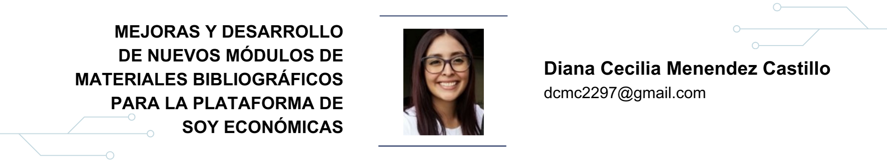

6 Mejoras y desarrollo de nuevos módulos de materiales bibliográficos para la plataforma de Soy Económicas

6.1 Resumen
En la actualidad, la Facultad de Ciencias Económicas lleva a cabo la gestión de los recursos educativos de su comunidad estudiantil a través de la plataforma Soy Económicas. Con el crecimiento de la comunidad y la necesidad de colocar más recursos al alcance de la misma surge la necesidad de llevar a cabo módulos e implementaciones que cumplan con esta tarea, así como de facilitar la manipulación de la información por parte del personal administrativo.
Para ello se adicionó como parte de un proyecto de EPS el sistema de gestión de reserva de cubículos y se desarrollaron los módulos de préstamo, actualización y eliminación de materiales bibliográficos. Esto motivó a que se agilizara el proceso de acceso a la información para el estudiante, y que el mismo se acoplara a las diferentes necesidades de cada una de las sedes, tales como disponibilidad de recursos y horarios laborales.
En atención a los requerimientos de la biblioteca y sus objetivos, se trabajó cada módulo descrito anteriormente, de manera que garantizara las mejoras y adiciones significativas al sistema para cumplir con la meta trazada.
6.2 Abstract
Currently, the Faculty of Economic Sciences manages the educational resources of its student community through the Soy Económicas platform. With the growth of the community and the need to place more resources within its reach, the need arises to carry out modules and implementations that fulfill this task, as well as to facilitate the manipulation of information by administrative personnel.
To this end, the cubicle reservation management system was added as part of an EPS project, and the modules for loaning, updating, and removing bibliographic materials were developed. Each of the aforementioned functionalities streamlined the process of access to information for the student, as well as they were coupled to the different needs required by each of the locations, such as: availability of resources and working hours.
Meeting the requirements of the library and its objectives, each of the modules described above was worked on in such a way as to guarantee significant improvements and additions to the system that meet the goal set for the project.
6.4 Introducción
La Facultad de Ciencias Económicas cuenta con una sede central y una subsede en su centro de documentación, en las cuales facilitan a estudiantes y docentes materiales bibliográficos. Para dar cumplimiento a sus objetivos, surge la necesidad de agregar nuevos módulos a su plataforma con el fin de cubrir las necesidades de la comunidad estudiantil en general.
Entre los módulos que se implementan se lleva a cabo un apartado para control de los ejemplares que se prestan para ser fotocopiados. Adicionalmente, se desarrolla un sistema para la gestión de préstamo de cubículos para ambas sedes, el cual se acopla a sus diferentes necesidades. Por otra parte, para hacer más fácil la manipulación de la información, se agregan las opciones de modificar y eliminar registros; esto permitirá al personal administrativo facilitar sus tareas diarias, en cumplimiento de sus objetivos.
6.5 Artículo
El centro de documentación de la Facultad de Ciencias Económicas cuenta tanto con una sede central como con su respectiva subsede. Ambos lugares desean colocar a la disponibilidad del estudiante todos los recursos con los que cuentan actualmente.
Para cumplir con dicha solicitud, se requiere llevar a cabo funcionalidades que agilicen las tareas de gestión de reserva de cubículos, préstamo y devolución de ejemplares para fotocopias, y la actualización y eliminación de materiales bibliográficos. Como parte de la solución planteada para los requerimientos descritos anteriormente, se propone la elaboración de manuales de usuario y de base de datos correspondientes a los respectivos cambios realizados.
Priorización de las necesidades
De acuerdo con las necesidades anteriormente descritas y al valor que estas aportan al proyecto, se define de la siguiente manera su priorización:
Gestión de cubículos de estudio
Visualización del estado de un cubículo de estudio
Préstamos para fotocopias
Modificación y eliminación de materiales bibliográficos
Reportes de préstamo de cubículos de estudio
Manual de usuario
Manual de base de datos
Productos del proyecto
A continuación, se definen los productos entregados como parte de la solución propuesta.
A. Módulo de gestión de cubículos
Permite al cuerpo estudiantil conocer en todo momento la disponibilidad de los cubículos de estudio con los que cuenta el centro de documentación, tanto en la sede central como en la subsede. Las especificaciones implementadas en el módulo de gestión de cubículos para el usuario administrador son las siguientes:
Filtros: área en la que se solicita información para visualizar los cubículos y sus respectivos estados.
Visualización del estado de un cubículo: consiste en matriz de 5x5, en la cual se define un color para cada estado. El color rojo representa un espacio reservado, el verde, disponible y el azul, en mantenimiento; tal y como se muestra en la siguiente figura.
Figura 6.1: Matriz de cubículos. Fuente: elaboración propia.
- Cuadro de acciones: consiste en un área dentro del módulo en la cual se tienen las diferentes funcionalidades que se pueden realizar sobre un cubículo:
Reservar un espacio
Cancelar reservas
Eliminación de espacios disponibles
Colocar un cubículo mantenimiento
Creación de nuevos espacios
Modificar un cubículo en estado disponible nuevamente
Modificar horarios
Visualización de reporte
B. Módulo de modificación y eliminación de materiales bibliográficos
Este módulo se adicionará a las funcionalidades ya existentes en el apartado de búsqueda por catálogo; el agregado de estas opciones tendrá como objetivo llevar a cabo las tareas siguientes:
Eliminación de materiales bibliográficos: esta funcionalidad consistirá en excluir de la búsqueda aquellos materiales bibliográficos que el usuario administrador del sistema decida.
Modificación de la información de materiales bibliográficos: permitirá al usuario administrador cambiar la información de los materiales cuando sea necesario.
C. Módulo de préstamos para fotocopias
Este apartado tiene como finalidad permitir a los estudiantes que se acerquen a la subsede del centro de documentación y puedan utilizar material bibliográfico y sacar copias del mismo, ya que en esta sede no se cuenta con la posibilidad de retirar ningún ejemplar, a diferencia de la sede central.
Este módulo se encuentra disponible únicamente para el usuario administrador, quien es el encargado de realizar el registro, tanto del ejemplar que se está prestando como de su posterior devolución. Dicho apartado cuenta con las siguientes funcionalidades:
Registrar préstamo
Carga de fotografía
Distinción de ejemplares prestados
Devolución de ejemplares
Capacitación
Esta fase se lleva a cabo con la finalidad de brindar al personal que tiene a su cargo manejo de la plataforma, la oportunidad de resolver dudas y clarificar los pasos que deben seguir al utilizar las funcionalidades y módulos anteriormente descritos. Para ello, se realizan reuniones con los diferentes equipos del personal administrativo y técnico del centro de documentación, tanto para la sede central como para la subsede. En estas reuniones se muestra todo el funcionamiento de los nuevos módulos implementados, y se detalla cada caso de uso establecido en el sistema.
Material elaborado
Para asegurar la escalabilidad del sistema, se elaboraron diferentes materiales técnicos que pretenden facilitar el entendimiento sobre los módulos y funcionalidades que se adicionaron al sistema de Soy Económicas y, de esta forma, garantizar el mantenimiento y mejora del mismo. Los materiales elaborados corresponden a un manual de usuario y de base de datos, respectivamente.
6.6 Conclusiones
Se implementó un nuevo módulo dentro del sistema de Soy Económicas, el cual lleva a cabo la tarea de gestión de reserva de cubículos a través de solicitud de información. El usuario administrador tiene a su disposición todas las opciones, mientras que el usuario estudiante solamente tiene acceso a prestar o cancelar una reserva. Las opciones que se desarrollaron son las siguientes:
Reserva de cubículos: permite registrar el préstamo de una estación del trabajo durante un horario establecido para un determinado usuario.
Cancelar reserva: permite cambiar la disponibilidad de un espacio, de tal forma que pueda volver a colocarse en disponible, nuevamente.
Crear espacios: se encarga de agregar nuevas estaciones de trabajo bajo el identificador que establezca el administrador.
Eliminar espacio: permite eliminar un cubículo de la interfaz, de tal forma que no sea visible nuevamente dentro de la base de datos.
Colocar en mantenimiento: muestra gráficamente que un espacio no se encuentra disponible por mejoras al mismo, sin permitir una reserva.
Colocar en “Disponible”: se encarga de colocar nuevamente un espacio que estuvo en mantenimiento en disponible.
Modificar horarios: permite al usuario administrador definir de acuerdo con la sede, el horario de atención en el que desea que el sistema permita una reserva, así como también establecer la cantidad de horas en las que el mismo permitirá realizar un préstamo.
Ver historial de reservas: permite al usuario administrador visualizar un histórico de préstamo de espacios con base en un rango de fechas ingresado.
El módulo de préstamo de materiales bibliográficos se adicionó a los previamente desarrollados en la plataforma de Soy Económicas. Dicho apartado fue llevado a cabo en forma de búsqueda en un catálogo. Al visualizar el detalle de información del módulo, este permite la opción de realizar el préstamo para fotocopias. Dicha opción solicita el ingreso de la siguiente información:
Ingreso de fotografía: el sistema solicita que se cargue una fotografía del estudiante, la cual será tomada por el equipo del personal administrativo.
Carnet: el sistema solicita el ingreso del carnet del estudiante que desea realizar el préstamo.
Con los datos descritos anteriormente, el sistema valida la información; si es correcta se lleva a cabo el préstamo, de lo contrario, niega la acción.
- Se adicionó a la búsqueda por catálogo, la opción de eliminación de un material. Dicha opción solicitará una confirmación de parte del usuario antes de llevar a cabo la acción para realizarla. En el caso de la modificación, se agregó al sistema un formulario que desplegará automáticamente la información del ejemplar que se desea actualizar. En esta opción el personal puede modificar los datos y confirmar la acción. Si el sistema encuentra algún error mientras realiza la transacción se lo mostrará al usuario.
6.7 Recomendaciones
Se sugiere al personal técnico llevar a cabo una unión entre los módulos de búsqueda por catálogo y préstamo para fotocopias, de tal forma que llevando a cabo dicha acción se optimicen los recursos del sistema y se centren en una sola área todas las opciones que se colocan a disposición del usuario.
Se sugiere al personal técnico llevar a cabo la implementación de un área de reportes especializada de acuerdo con cada sede para visualizar gráficamente la información entrante al sistema.
Se recomienda al personal de mantenimiento mejorar la parte responsiva de la aplicación para que pueda visualizarse en diferentes pantallas y sea agradable para el usuario en todo momento y en cualquier dispositivo.
6.8 Referencias
- [1] Six, Janet M. (2014). Fundamental Principles of Great UX Design. UX Design. http://www.uxmatters.com , Último acceso: 21 de enero de 2023